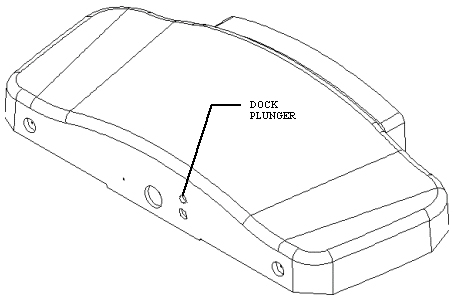
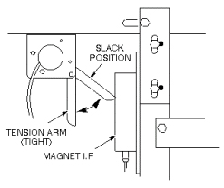
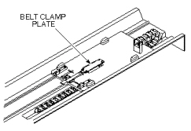
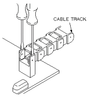
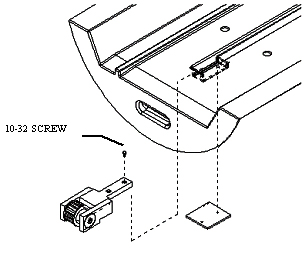
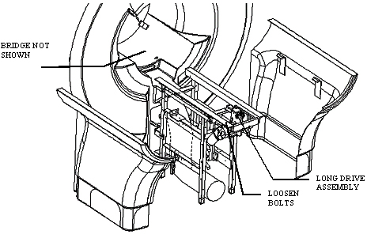
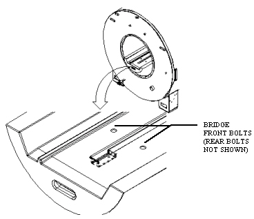

Operating Documentation
Direction 5440000, Rev# 5
Signa HDxt Service Methods
Module Version 1.0, Version Date 5/3/07
Operating Documentation |
| Required Persons | Preliminary Reqs | Procedure | Finalization |
|---|---|---|---|
| 1 |
Procedure for replacing the patient transport bridge.
| ||||
| FERROUS MATERIAL HAZARD!! | ||||
| THE PULLEY ASSEMBLY CONTAINS PARTS MADE WITH FERROUS COMPONENTS. HOLDING THIS ASSEMBLY TOO CLOSE TO THE MAGNET BORE WILL FORCIBLY ATTRACT IT TO THE MAGNET. | ||||
| TO PREVENT POSSIBLE BODILY INJURY, OR DAMAGE TO COMPONENTS, REMOVE THE ASSEMBLY DIRECTLY, NOT MOVING IT IN THE MAGNETIC FIELD MORE THAN IS NECESSARY. |
| ||||
| FERROUS MATERIAL HAZARD!! | ||||
| THE FRONT BRIDGE SUPPORT ASSEMBLY CONTAINS PARTS MADE WITH FERROUS COMPONENTS. HOLDING THIS ASSEMBLY TOO CLOSE TO THE MAGNET BORE WILL FORCIBLY ATTRACT IT TO THE MAGNET. | ||||
| TO PREVENT POSSIBLE BODILY INJURY, OR DAMAGE TO COMPONENTS, REMOVE THE ASSEMBLY DIRECTLY, NOT MOVING IT IN THE MAGNETIC FIELD MORE THAN IS NECESSARY. |
Undock patient transport. Move patient transport out of the way of the front cover of the magnet.
Remove covers on rear pedestal.
While holding in the patient transport dock plunger (see Illustration 1), move the carriage to the rear of the magnet by pressing the “In Fast” button on the enclosure.
Illustration 1: HOLDING DOCK PLUNGER

Lock out and tag out circuit breaker MR1 A14 CB6 at rear of RF/Pen Cabinet (MR1) on magnet enclosure power supply (MEPS) module.
For RF/Pen II and RF/PDU Cabinet: Lock out and tag out circuit breaker MR1 A20 CB4 at rear of RF/Pen II and RF/PDU Cabinet on System Support Module (SSM).
(Refer to .)
Verify that voltage between MR1 A14 TP1 (+) and TP14 (–) is 0 Vdc.
For RF/Pen II and RF/PDU Cabinet, Verify voltage between MR1 A20 TP1 (+) (Dock) and TP14 (–) (Dock RTN) is 0 Vdc.
Remove four screws from the top of the carriage cover.
Lift carriage cover and disconnect eleven cable connections. Remove carriage cover from the bridge.
Lift the tension arm to release tension from carriage drive belt (see Illustration 2).
Illustration 2: RIGHT SIDE VIEW OF REAR PEDESTAL (AS VIEWED FROM REAR)

Unclamp belt by removing four screws holding belt clamp plate (see Illustration 3).
Illustration 3: BELT CLAMP PLATE

Pull belt out completely from beneath the bridge.
Disconnect cables from rear pedestal.
Carefully disconnect the cable track from carriage by using two standard-blade screwdrivers to gently ease pins from retaining holes in bracket (see Illustration 4).
Illustration 4: REMOVING CABLE TRACK

Lift carriage off of bridge.
Remove two screws from longitudinal drive assembly tongue at back of bridge while supporting sensor plate beneath bridge as you remove the screws. See Illustration 5 for exploded view.
Illustration 5: LONG. DRIVE PULLEY ASSEMBLY

Set sensor plate on top of Magnet I/F, or devise some other method of support so that sensor plate is not hanging by wires.
Disconnect cable run 318 from short cable on Longitudinal Drive motor.
Disconnect Longitudinal Encoder cable from J3 on Magnet I/F.
| ||||
| FERROUS MATERIAL HAZARD!! | ||||
| THE PULLEY ASSEMBLY CONTAINS PARTS MADE WITH FERROUS COMPONENTS. HOLDING THIS ASSEMBLY TOO CLOSE TO THE MAGNET BORE WILL FORCIBLY ATTRACT IT TO THE MAGNET. | ||||
| TO PREVENT POSSIBLE BODILY INJURY, OR DAMAGE TO COMPONENTS, REMOVE THE ASSEMBLY DIRECTLY, NOT MOVING IT IN THE MAGNETIC FIELD MORE THAN IS NECESSARY. |
Remove two bolts holding longitudinal drive assembly to the rear pedestal (see Illustration 6).
Illustration 6: LONG. DRIVE ASSEMBLY LOCATION

Tilt drive assembly so tongue points upward; remove drive assembly, taking care not to damage motor by bumping it against rear pedestal.
Loosen two screws from the tongue of the front belt pulley assembly, and remove clamp plate from beneath bridge. Remove screws and washers from tongue.
Remove cables from J1 and J2 of dock control module.
Using an allen wrench, remove (4) four M6 bolts holding down bridge. Two of the bolts are in the front of the bore and two bolts are in the back of the bore. Lift front of bridge off front bridge pin (see Illustration 7).
Illustration 7: FRONT BRIDGE PIN

| ||||
| FERROUS MATERIAL HAZARD!! | ||||
| THE FRONT BRIDGE SUPPORT ASSEMBLY CONTAINS PARTS MADE WITH FERROUS COMPONENTS. HOLDING THIS ASSEMBLY TOO CLOSE TO THE MAGNET BORE WILL FORCIBLY ATTRACT IT TO THE MAGNET. | ||||
| TO PREVENT POSSIBLE BODILY INJURY, OR DAMAGE TO COMPONENTS, REMOVE THE ASSEMBLY DIRECTLY, NOT MOVING IT IN THE MAGNETIC FIELD MORE THAN IS NECESSARY. |
Remove the front bridge support assembly.
Carefully lift and slide bridge out of the magnet bore.
No finalization steps.